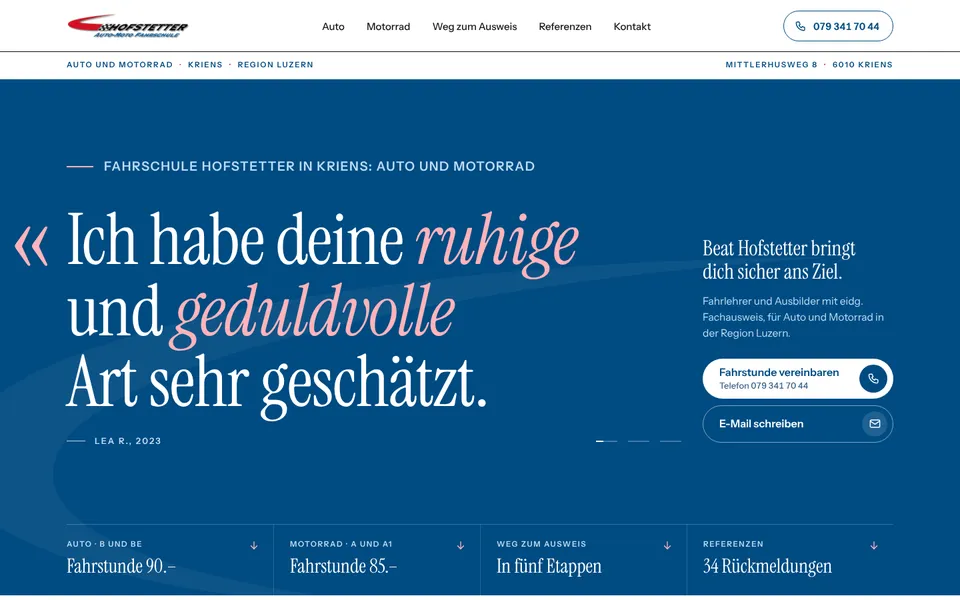
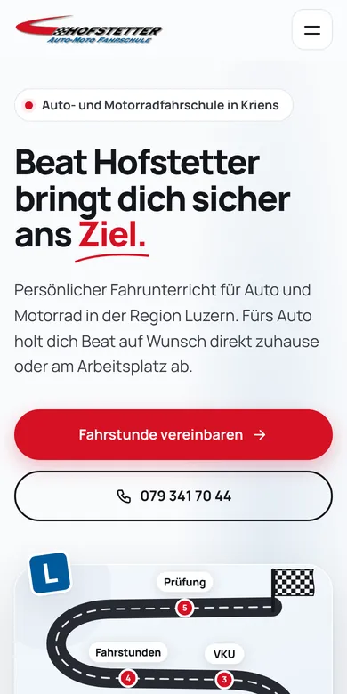

Design A
Stimmen
Ein Magazin über Sie, erzählt von Ihren Fahrschülern: Die blaue Titelseite zeigt ein echtes Zitat über Ihre ruhige und geduldvolle Art, Angebot, Preise und der Weg zum Ausweis folgen als Rubriken. Elegante Schrift und sanft einblendende Zitate wirken seriös und schaffen Vertrauen, auch bei Eltern.
- Magazin
- Ihre Referenzen
- Blau und Weiss